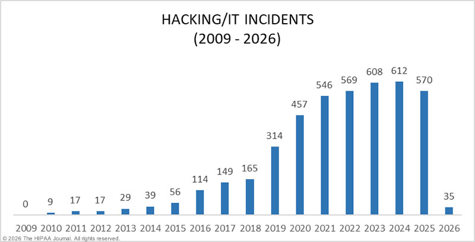

Hacking has been around nearly as long as computers themselves. From curiosity and experimentation, hacking has grown into one of the most important aspects of modern technology and global security.
The term "hacker" was first used at MIT in reference to students who pushed computers beyond their intended limits. These early hackers were not criminals, but rather curious engineers who wanted to learn how the new systems worked.
The next generation of hackers found a way to exploit the telephone networks to make free phone calls. The most famous of these was John Draper, nicknamed "Captain Crunch", who used a toy whistle to hack AT&T's phone system by emitting specific frequencies at certain moments to trick the system.
As personal computers became more widespread, hacking moved from curiosity to crime. In 1983, the movie "WarGames" was released, bringing hacking into public awareness by showing a teenager nearly starting World War III by hacking into a military computer.
This graph shows recent surges in hacking occurrences over the past 17 years

Source: https://www.hipaajournal.com/healthcare-data-breach-statistics/
The rise of the internet has brought forth an entirely new world for hackers. Kevin Mitnick became one of the most wanted cybercriminals in the US after breaking into the systems of companies like Nokia and Motorola, accessing sensitive information, tape drives, and manipulable source code.
In this time, hacking grew into a global menace and threat. In 2000, a 15-year-old Canadian known as "Mafiaboy" downed major websites including Yahoo, CNN, and Amazon using denial-of-service attacks (by overwhelming their networks with masses of fake traffic).
From 2010 onwards, hacking became a major tool for governments and political groups. In 2013, Edward Snowden leaked classified NSA documents revealing massive government surveillance operations worldwide. Additionally, in 2016, state-sponsored hackers tampered with the US presidential election, resulting in numerous reforms, expulsions, and resignations.
Nowadays, hacking is a billion-dollar industry, not only for cybercriminals, but also for those hired to stop and prevent them. Cybersecurity is considered to be one of the fastest growing fields in the entire technology industry.